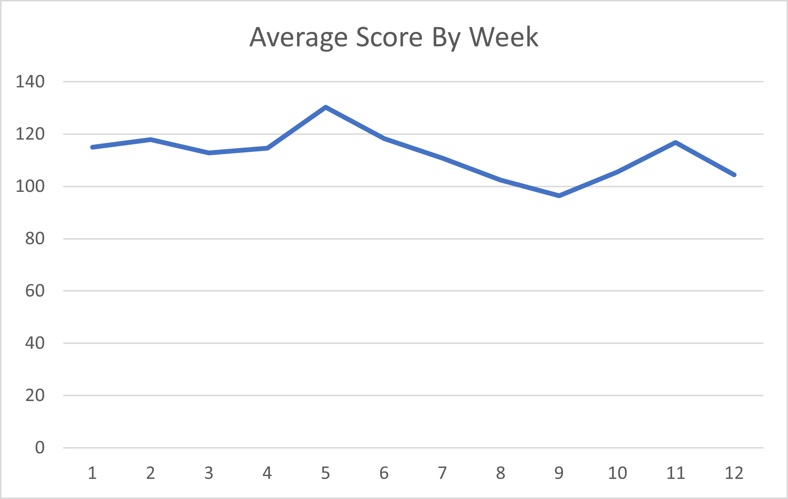
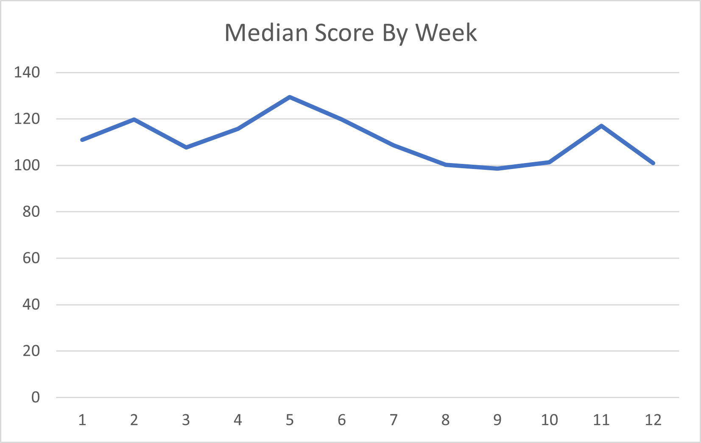
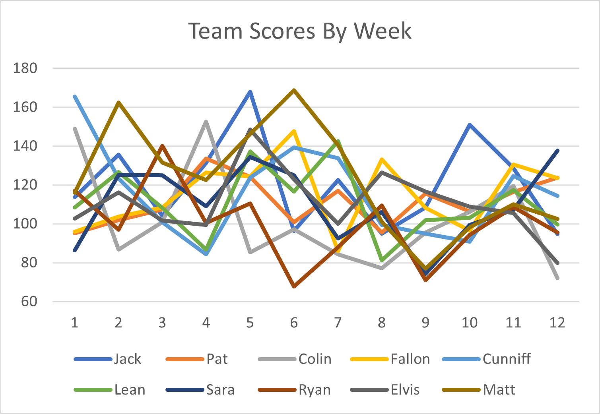

Washed Up Greyhounds Weekly Roundup
Week 12
Something huge has happened. Something monumental. Historic, even. Something that quite possibly could change the trajectories of each and every one of our lives without us even knowing it. That's right - the hot sauce has been ordered. The end is now in sight for some unlucky few of us as this past week really cemented the trajectory of the rest of the season for the bottom of the barrel, while making things an absolute shitshow for those of us who still have a chance. After all this chaos, only one thing remains true: Fantasy Football sucks ass. Let's see how we all did.
Introductions
Wuhan Bats
Jawn Lunch
9-3
The chances of him NOT getting first are slim... but never 0.
Wharf Rat Owners
Patrick Authority
5-7
Could be convinced to kiss Cordarelle Patterson if he was like 2 or 3 drinks deep.
Wandisimo
Colin Burke
3-9
ruh roh (cont.)
COOKing Dinner
Andrew Fallus
7-5
I liked the comeback until it started affecting me please stop.
Boston Weathermen
Matthew James Cunniff
7-5
Certified bad team.
female playing
Colleen "Lean" McCormack and Will "Willean" McCormack
5-7
Wins the Biggest Balls of the Year award for starting Tyrod "Punctured Lungs" Taylor.
Pelosi's Beefcurtains
Sara Aloupis and Sara Aloupis' Fantasy Slave
7-5
Okay Therm haha winning was funny but give Sara her phone back now.
Joe Biden's Speechwriter
Ryan Luca
3-9
2 weeks until you kiss your tastebuds goodbye.
Earl Thomas' Brother
Elvis Smuth
0-11
Oh I got your record wrong last week? Guess what, you stooge. Your record is what I say it is.
Scrub Daddy
Matt Kinny
7-5
Remember when I was 7-1? Pepperidge Farm remembers.
You guys think I'm joking when I make fun of you in these roundups, but actually I'm serious and I'm just a terrible, terrible prick.
Please Don't Touch My Graff
Mean Average Score
Median Average Score
Team Scores by Week
Can we get like a C+ Finance 101 student in here to fix these graphs for me? I need help.
Consistent Constipation
More like consistent boring section hahaha I would like to die please.
| Team | Std Dev | |
|---|---|---|
| Wuhan Bats | 22.27 | |
| Whart Rat Owner | 11.67 | |
| Wandisimo | 24.94 | |
| COOKing Dinner | 17.54 | |
| Boston Weathermen | 22.49 | |
| female playing | 17.72 | |
| Pelosi's Beefcurtains | 18.98 | |
| Joe Biden's Speechwriter | 18.80 | |
| Earl Thomas' Brother | 16.49 | |
| Scrub Daddy | 26.48 |
We're reaching the end times ladies and gentleman. We've been through so many weeks that new scores barely budge our deviations, so pretty much the way things are now are how they'll stay. Unless, of course, something insane happens. I should probably just retire this section, but just like the homeless man outside the vape shop told me last night, I should "never quit steezing".
ESPN Sucks
There's no sno on the flo, this man really skiing the Coney Island hardtop.
| Team | Projected Score | Actual Score | Diff | |
|---|---|---|---|---|
| Wuhan Bats | 131.5 | 94.75 | -36.75 | |
| Whart Rat Owner | 110.9 | 99.3 | -17.1 | |
| Wandisimo | 99.3 | 72.1 | -27.2 | |
| COOKing Dinner | 120.5 | 123.4 | 3 | |
| Boston Weathermen | 109.3 | 114.45 | 5.15 | |
| female playing | 116.3 | 99.6 | -16.7 | |
| Pelosi's Beefcurtains | 112.9 | 137.75 | 24.85 | |
| Joe Biden's Speechwriter | 106.6 | 95.5 | -11.1 | |
| Earl Thomas' Brother | 111.1 | 79.75 | -31.35 | |
| Scrub Daddy | 123.9 | 102.45 | -21.45 |
Just like the race for worst Tradeswell employee between Wuhan Bats and Earl Thomas' Brother, the race for biggest dissapointment this week was very close. Our favorite startup darlings missed their projections by a mile, by 36.75 points and 31.35 points respectively. Coincidentally, both have a two game cushion in their divisions BUT this better not be a trend in the next two weeks or the long-standing kings will quickly be dethroned. The biggest win of the week was Pelosi's Beefcurtains with a solid 24.85 points above her projection. How did we let this happen, guys? I'm not sure she could name her starting quarterback with a gun to her head. We should be ashamed.
You Got "Lucky"
Coming home from my soul-crushing job and writing this is the worst thing I've ever forced myself to do, and it will have that title for years to come until I finally get a colonoscopy.
| Team | Hypothetical Record | Hypothetical Standing |
|---|---|---|
| Wuhan Bats | 66-42 | 2nd |
| Whart Rat Owner | 57-51 | T-5th |
| Wandisimo | 31-77 | 10th |
| COOKing Dinner | 57-51 | T-5th |
| Boston Weathermen | 50-58 | 8th |
| female playing | 53-55 | 7th |
| Pelosi's Beefcurtains | 60-48 | 4th |
| Joe Biden's Speechwriter | 34-74 | 9th |
| Earl Thomas' Brother | 62-46 | 3rd |
| Scrub Daddy | 71-37 | 1st |
Takeway time! Here we go:
In line with recent trends (i.e. 4 game losing streak), Scrub Daddy was the unluckiest loser this week. I posted the 5th highest score with 102.45 points but was led like a lamb to the slaughter to the 4th highest scorer COOKing Dinner. Something something would have beaten more people than I would have lost to, you get the drill.
The league's resident unluckiest team finally had a streak of luck, albeit wayyy too late. The 6th highest scorer female playing posted 99.6 points and managed to walk away with a win against the league's poverty franchise Wandisimo. At least you are good at the crossword! (She's actually just okay, I'm only saying she's good so she doesn't feel too bad about her fantasy team. Lean don't read this.)
The Fr. Linnane's Special Little Hound Award
Our Special Little Hound is now crowned winner of this award for the second week in a row, after not having made an appearance for the entire first 10 weeks of the season. This dual-threat team has the West division shaking in their god damn boots, and for good reason.
The Fr. Linanne's Special Little Hound of Week 10 is...
Pelosi's Beefcurtains
Sara Aloupis
Congrats, you sucked the least!
A running tally of Fr. Linnane's Special Little Hound Award winners can be found here:
| Team | Special Little Hound Wins |
|---|---|
| Boston Weathermen | I |
| Scrub Daddy | II |
| Joe Biden's Speechwriter | I |
| Wandisimo | I |
| Wuhan Bats | II |
| female playing | I |
| COOKing Dinner | I |
| Earl Thomas' Brother | I |
| Pelosi's Beefcurtains | II |
The Lou of the Week Award
Yup.
The Lou of the Week is...
Jimmy's Mom?
Colin Burke
Congrats, you suck!
A running tally of Lou of the Week winners can be found here:
| Team | Lou of the Week Wins |
|---|---|
| Wandisimo | IIIIII |
| Pelosi's Beefcurtains | I |
| Boston Weathermen | III |
| Joe Biden's Speechwriter | III |
Listen, I hate to burst your bubble, but here's how the rest of the season is going to play out: Wuhan Bats and Earl Thomas' Brother get first round byes, and COOKing Dinner demolishes Boston Weathermen in the first round while Scrub Daddy loses an absolute heartbreaker by 3-8 points to Pelosi's Beefcurtains. Wuhan Bats comes back off the bye week looking sluggish and loses to COOKing Dinner, while Earl Thomas' Brother somehow beats Pelosi's Beefcurtains because of course he does. The championship is a shit show as both teams will probably be injured to hell. It's hard to call, but I'll give it to COOKing Dinner. When this is exactly what happens, I better get props.
Archive
| Wk1 | Wk2 | Wk3 | Wk4 | Wk5 | Wk6 | Wk7 | Wk8 | Wk9 | Wk10 | Wk11 | Wk12 | Wk13 | Wk14 |
|---|